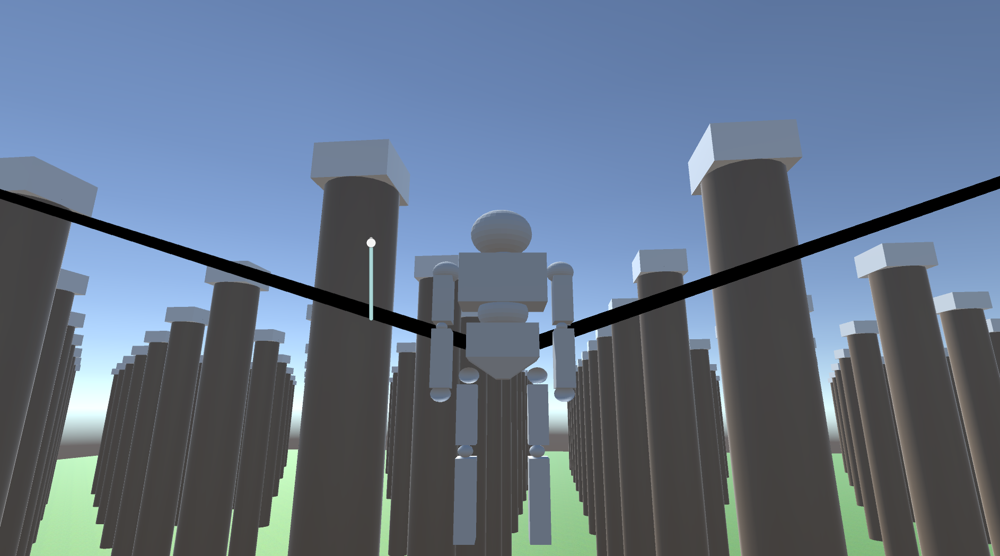

Projects
Metaballs_Multithreaded | Dark Acropolis | Regiment AI | Quadrapedal Character Controller | OpenGL Graphics Engine | Attack on Titan TGTG
Attack on Titan TGTG Tech Demo
This project is a 'Tribute Game' for the Attack on Titan Tribute Game and is made with it as inspiration. My goal was to simulate the ODM(Omni-Directional Movement)Gear from the anime Attack on Titan similarly to the AOTTG. Although this was inspired by the AOTG I have strayed from some of the design choices in my own direction.
To implement the ODM gear, inside my ODMLogic script I made use of Unity's spring components, using functions and fine-tuning the settings to make them imitate ODM Gear. I found that this project was similar to my Quadrapedal Character Controller that was a smaller project that I needed to fine tune produce the right result. An example of this tuning is how I implemented Unity's physic's material to control the friction of the player so that flying around and through obstacles didn't feel 'sticky' but when sliding on the floor didn't feel frictionless. I used a state machine inside a player movement script to implement and control sliding, swinging, walking and the gas mechanic which can be used for extra propulsion.


Currently the game only has the movement mechanics and a low quality model I made, however in the future I plan to add some animation, a better map and titans(enemies) with the attack mechanics.